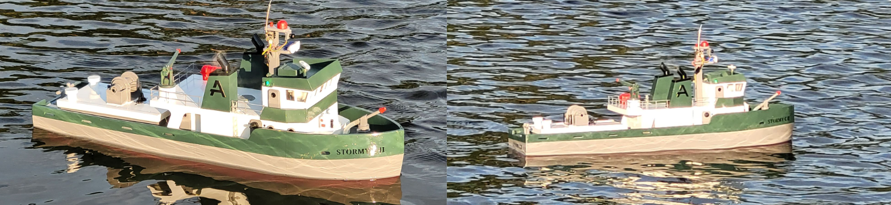
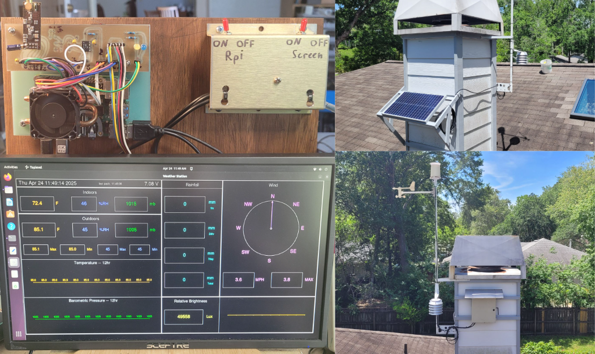
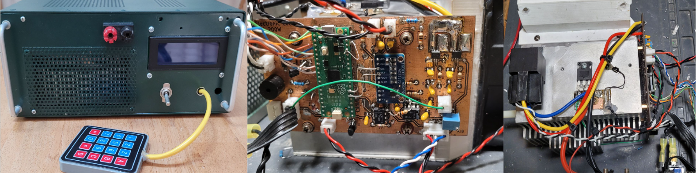
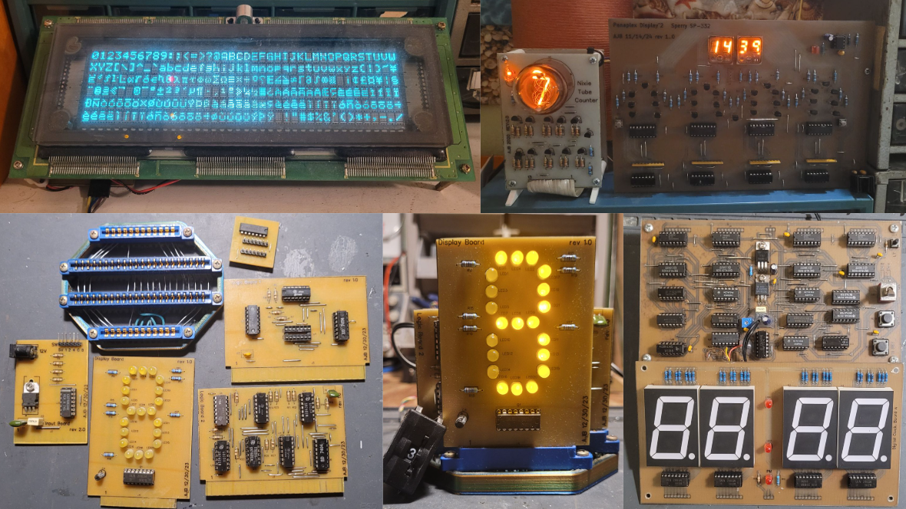
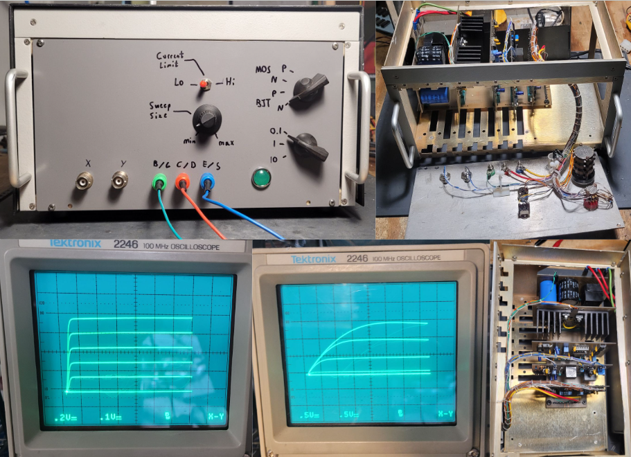
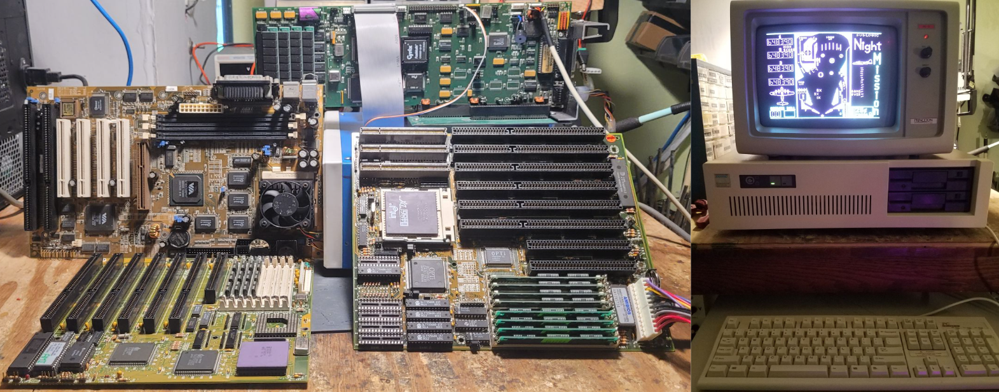
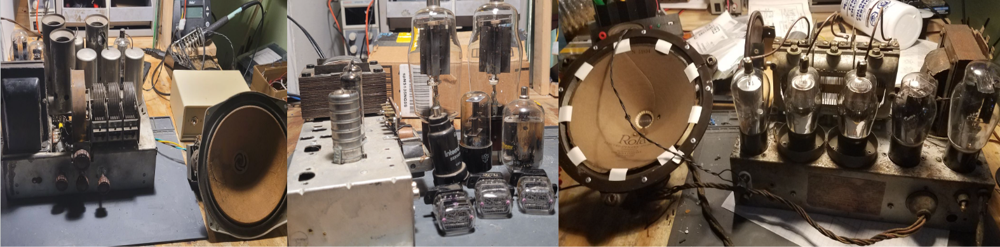
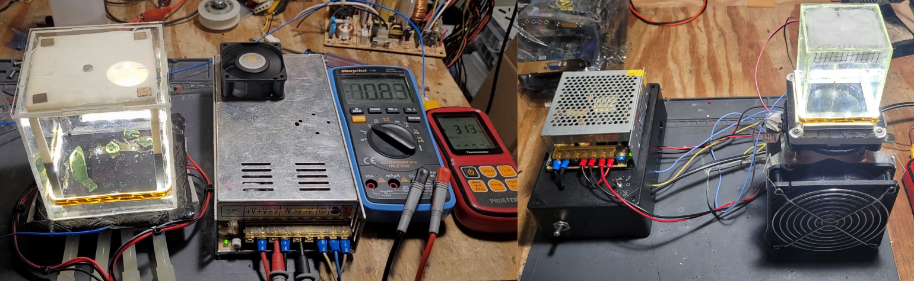

I am a recent graduate from the Herbert Wertheim College of Engineering at the University of Florida. I majored in Electrical Engineering and received my
bachelors degree in may of 2025. Electronics has been a long-time interest for me, so choosing to major in Electrical Engineering was an easy choice.
Currently I am seeking an entry level job in Electrical Engineering. I am interested in the power electronics field, a field of Electrical Engineering based
on high power DC or AC circuits, with a large influence on robitics, renewable energy, and electric vehicles. I enjoy hands-on tasks the most, like assembling
circuit boards or wiring, but I also enjoy computer based design processes, for example CAD or EDA
I spend my spare time tinkering with things, usually electronics, sometimes other mechanical devices. Regardless of electrical or mechanical I have a desire
to learn how things work and why things are the way that they are. Inspiration for a project usually comes from some salvaged part, I form a vision of what I think
I can do with that part, and everything stems from there. I love the creative design process, going from a pile of parts to a finished product is fun every step of the way.
Creating a pile of parts from a complete product is also lots of fun for me, I enjoy taking things apart as much as putting things together.
It is a chance to learn how somebody else designed and assembled something, a chance to discover new things, and at the end of the day I have a bunch of new parts
to be repurposed later!
Education
University of Florida
I graduated with my bachelors in Electrical Engineering from the Herbert Wertheim College of Engineering at the university of florida in May of 2025.
The University of Florida is a great school, during my time there I met many great people and got to experience lots of cool things. Despite the constant
construction and periodic lack of taste in architecture, the UF campus is beutiful and packed with things to discover.
Being a person that likes to learn by doing, the most meaningful classes that I took at UF were the design or project based ones, such as junior or senior design.
These two classes are not like typical lecture based classes, they are self guided design projects where you are the engineer.
There are some simple requirements to fulfill, but it is entirely on you to put the pieces together. This is something that I wish happened more in engineering classes,
the design process is how me and lots of other students learn the best.
Other classes that I took at UF included things like digital design or power electronics. Digital systems and power electronics are two parts or electrical engineering
that I like working in the most, there is something satisfying about digital circuits and the ability to manipulate data and do operations with a collection of
simple components. In a time when efficiency is more relevant than ever, the field power electronics is never dull!
The thing that I am most proud of from my time at UF and the thing that I will look back on the most is my contributions to a research lab in the mechanical and Aerospace
Engineering department. This lab was developing a product called the BathyDrone, with support from Aurego. The Bathydrone is a bathymetric mapping sustem in which a large
drone tows a small unpowered vessel equiped with sidescan sonar. Every day that I spent working with the team on this project was a joy, everybody shared the same interest
in engineering and the same desire to push the boundaries of what we were capable of.
Santa Fe College
Before attending the University of Florida I took classes at Santa Fe College as part of a program called Gator Engineering at Santa Fe. The goal of the program is to allow students to
take genED classes at SantaFe before "transferring" to UF. Although not a typical route to get to UF it had a number of benifits for me, not the least of which being the
fact the Santa Fe costs roughly half as much as UF's in-state tuition. The other big advantage for me was smaller class sizes and a more close knit community, which really
improved the experienc of taking difficult classes like calculus, physics, and chemistry.
Experience
The Bathydrone
The Bathydrone is a project led by Dr. Peter Ifju and Dr. Jane Shin in the Mechanical and Merospace Mngineering department at the University of Florida.
Together with Phd students, masters students, other faculty, and undergraduates like me, we worked on developing a new method to do bathymetry faster and
cheaper than traditional methods. The Bathydrone gets its namesake from bathymetry and the drone that tows the vessel. This project was made possible by
Aurigo Software technologies, a company that specializes in software for civil engineering and project management, particularly governments.
Displayed to the left in the middle upper and lower images are an overview of the heavy-lift drone and unpowered vessel. The drone was built in-house by students
using carbon fiber, which makes for an airframe that is very durable an light weight. The vessel was built by laying fibergalss over a foam form to create a very precise
shape. This shape was fine tuned over nearly half a dozen iterations to make a vessel that could plane level while being pulled from above and be resistant to
capzising. The vessel also needed to be light since the Bathydrone system is designed with the intention that the drone can fully lift the vessel in and out of the water,
the latest revision of the vessel and drone weighed about 20 pounds each, putting the system near the legal FAA weight limits for this class of vehicle.
The Bathydrone did bathymetric mapping using a sidescan sonar for imagery and RTK corrected GPS for accurate postitioning. With these two components the imagery was post
processed into a map of the bottom surface of the water body relative to the water surface. The sonar system used was a Lowrance HDS 11 recreational "fish finder",
despite being recreational grade equipment is was able to provide resonable accuracy sidescan and downscan, data logging, and limited networking capabilities at a price
far less than scientific grade sonar. For RTK GPS on the vessel we used a Pixhawk Cube Orange, which is actually a drone flight computer, but in the vessel it provided
RTK gps as well as the ability to control the twin rudders on the rear of the vessel. The drone also uses a Pixhawk Cube flight conputer and carries two RTK capable
GPS antennas.
My role in the team was primarily installing and maintaining the electrical systems of the drone and vessel. My first project was designing a device to measure and record
the tension in the tow line between the drone and vessel. This tension data was used to supplement physics simulation of the Bathydrone in part of one Phd student's research.
I also designed a power distribution borad (PDB) for the drone. The drone has many components that all needed different voltages to run, and the flight computer needed a way
to monitor battery state. To achieve this I designed and built a PDB that distributes 52V battery power to each motor while also monitoring current and voltage.
The large motor currents flowed through internal copper planes while five different high voltage DC-DC converters on top of the PDB generated voltages needed for the flight
computer, servos, long range receiver, and navigation lights. I had never attempted a PCB design like this before, but I am proud to say that after donzens of drone flights
not a single failure occoured related to the PDB. In addition to PDB work I did lots of soldering and wiring for the vessel, the electrical systems on the vessel were
constantly changing as different things were tested or removed, so keeping the wiring reliable and as neat as possible was a constant challenge. Throughout my time working
in the lab I also assisted with field testing, which involved loading equipment into a vehicle, travelling to a site, and setting up equipment before running the experiment.
Field days rarely went the way they were planned and often took longer then planned, but part of doing research is handling problems and overcoming them as they are encountered
, no field day was ever wasted.
Drones for Robotic Perception
Displayed to the left is a pair of medium drones that I worked on for another research lab in the MAE department at UF. This lab worked in conjunction with the Bathydrone
lab, but was mainly focused on robotic perception research. A small team of other undergrad student and I worked on a set of four of the drones pictured. These drones are equipped
with a companion computer that communicates to both the drone's flight computer and a base station, relaying data between the two that allows the drone to fly indoors guided by an
Optitrack motion capture system. With the Optitrack system the drone could track or follow targets in a small space with milimeter precision. Over a summer with the help of the
team I assembled and tuned these drones before the programming for the motion capture sytem.
Projects
R.V. Baker: an extreme case of model boating
The R.V. Baker is a model remote control boat that I built over the course of two and a half years and completed in the spring of 2025. R.V. Baker got it's name from the fact
that both of my parents work in the school of forest, fisheries, and geomatic sciences at UF doing research on marine animals. Research boats are abbreviated R.V and often
dedicated to a researcher, so R.V. Baker made sense for this vessel. The whole inspiration for building
the boat was a 30cc four stroke engine from a weed wacker. Before building the hull I converted the engine to water cooling and coupled it to a 24V 240W brushed DC monitor
to run it as a DC generator. In the boat the generator supplies power for the electric systems and another large DC motor coupled to the propeller.
The hull, superstructure, and rigging are my own design, but I took lots of inspiration from spending time looking at fishing boats on the Oregon and Washington coast. Having
never built something like this I learned a lot about wood, fiberglass, and paint throughout the whole process. I spent many evenings after classes at UF laying and sanding
fiberglass, an excercise in both speed and patience all while smelling epoxy fumes or getting itchy from glass fibers. I had much more fun putting together the superstructure
and rigging once the hull was finally done.
The thing that I enjoyed the most working on the boat was designing the electrical systems. The boat has two cooling pumps, starting and drive systems, lighting, bilge pump,
ignition, and a water cannon for good measure! Many of the devices on the boat are capable of being controlled from the RC controller's aux switches or a switch panel on top of the
superstructure. I designed a custom control board, which I call the powertrain control module, to read the pwm signals from the RC receiver and switch relays accrding to the signals from the controller. The powertrain
controller as I call it, houses an arduino nano for interpreting the pwm signals, and a 5V DC-DC converter for powering the servos.
I run the R.V. Baker in small stormwater retention ponds, of which Florida has many. Moving the boat around is made significantly easier by the custom fit hand cart that I built,
fully balasted the boat weighs 150 pounds. In the water R.V. Baker is suprisingly maneuverable, although it is not fast by any means. In the future I will upgrade the generator
and drive motor to something that can handle the amount of power that the 30cc engine can produce, the current setup works ok but will overheat at full throttle for long periods
of time. As with any project like this it is constantly evolving, making repairs and changes in the shop is just as much fun for me as actually putting it in the water.
3D printed Vessels

My brothers and I got into 3D printing pretty early on during high school, we pretty quickly discovered that you could download 3D models of ships from the internet and turn them
into RC model boats. This is the case with Stormy C II shown above, I took the name from a fishing vessel that operates out of Coos Bay Oregon called Stormie C. Over the last
eight years we have printed six different model boats, Stormy C is one that I have built and it has gone through many different iterations since it was constructed in 2018.
By this point Stormy C is a case of the ship of Theseus, both the superstructure and hull are not the original, but were replaced at different times.
The hull is printed in ABS plastic, a difficult material to print with but the advantage is that it can easily be solvent welded. 3D prints are often porous, solvent welding
and wiping the surface with solvent fuses the layers together making the part stronger and watertight. The electronics in the boat are mainly standard RC vehicle parts,
although I added my own cooling systems and decorative lighting.
Weather Station

This weather station was my senior design project for UF. For the class we had to pitch a concept, design, build, and demo a functional prototype by the end of the semester.
My brother and I worked together on this project, our goal was to build a weather station that collected data from an array of sensors and then sent it wirelessly to a base station.
The sensor station as we called it, uses a Raspberry Pi Pico to collect data from a couple of mechanical wind sensors and a BME280 atmosphere sensor. Wireless communication is
done using a pair of NRF24L01+ 2.4GHZ transcievers. We wanted a nice graphical display on the ground station, so we decided to use a Raspberry Pi 4 running Ubuntu 22. The Raspberry
Pi provides all the nessecary tools needed to generate the display, interface with external modules, and run python code. As you can see in the above images, the sensor station is
installed in a high location for best wind vane and anemometer accuracy, the solar panel for the sensor station is also shown.
Electronic DC load

My junior design project was this electronic DC load, unlike the senior design project this was an independent assignment. Having an interest in power electronics I often
have the need for a powerful electronic load, unfortunately the ones with the specifications I want are far to expensive for me. My trick for getting equipment that is out of
my budget is to either buy a broken one and repair it, or build one of my own. Using almost entirely parts that I had on hand or parts that were provided through the class
I was able build a microprocessor controlled electronic DC load with reasonable success. This type of DC load uses a large mosfet operating in its linear region, where drain
current is roughly proportional to gate-source voltage. In my design current is measured by a hall-effect current sensor, which produces an analog voltage that in read by the
microcontroller, a raspberry pi pico in this case. The control loop in the pico constantly adjusts the gate-source voltage to keep the current constant, gate voltage is
generated by a 10-bit ADC. It was entirely functional but due to the nature of the design it had some pitfalls, such as the fact that python is not very good for creating
real-time control loops like this, it was difficult to get the loop to respond quickly without oscillating. In the future I hope to revisit this device and redesign it with
a hardware based control loop instead of software.
Digital Logic

I like to collect different old or outdated display technologies and create a simple table top display from them. Putting together digital circuits is a great excuse to display
old devices doing what they were intended to to. The collection of images above is a sample of the digital circiot that I have built. In the top left is a very large vacuum
fluoresent display, perhaps one of the largest ever produced. It is hooked up to as microcontroller so that I can connect a PS/2 keyboard and type messages on it. The two images
to the right of the VFD are examples of neon displays. In the middle is a Soviet made nixie tube, which has 10 individual number elements that light up to display 0-9. Right of
the nixie is a pair of rare "panaplex" displays, which is a type of neon gas discharge display that functions much like a modern LED 7-segment display. On the bottom row are
devices that are not nessecarily old display technologies, but rather are an exercise in logic design. Left is a BCD to decimal decoder made of discrete logic gates, and on the
right is my attempt at a clock using discrete logic ICs.
Transistor Curve Tracer

Transistor curve tracers have always insterested me for their ability to create those neat transistor operating curves that you sometimes see in data sheets.
As usual I could never afford to buy a real curve tracer, however I understood how they worked, so I set off to design my own. It took several months of designing, testing, and troubleshooting
to arrive at what is shown in the pictures, but I am proud of the final result. This device has the ability to generate a curve of NPN, PNP, Nmos, and Pmos transistors of all different sizes.
The base/gate stair step waveform is adjustable, and so is the voltage sweep across the device under test. I used this curve tracer as an excuse to go with a card-in-slot design
which makes for an interesting look and modular design, it also really helped during testing.
Vintage computing

I enjoy tinkering with all things electronics, so naturally I can't ignore the rich history of home computing. Over the last couple of years I have collected computer parts
from the early 1990s to early 2000s, mostly from a local shop in Gainesville called The Repourpose Project. The Repourpose Project is a non-profit that aims to keep stuff
out of landfills by accepting donations and reselling items that other places like Goodwill won't touch. With all these parts I have put together several systems spanning nearly
30 years of microsoft windows, including windows 3.1, 98, and XP. Although the 90s and 2000s many not be a significant part of computing history, it is still interesting to mess
around with. The image on the right is actually a computer owned by my brother, it is an IBM PC XT clone built in 1986 with 640k of RAM and a processor that runs at 4.77MHz.
Vintage HiFi
Shown above are a few examples of vintage receivers that I have worked on in the past, often times these can be found for low prices because they have broken down. HiFi equipment
from the 90s is easy to come by, but it doesn't have nearly as much character as the stuff from the 60s and 70s. Every receiver is different, so trying to fix them is always a fun
challenge. Sometimes the repair is easy, replace a few capacitors, clean a few swtich contacts and it is good as new! Others you spend weeks chasing a failing transistor. The
receiver shown in the top two images is a Marantz model twenty six that I bought locally and overhauled, to this day I use it often. The other two receivers are ones that I bought,
repaired and sold, or repaired for a friend.
Antique Radio

It is hard to overstate the importance of vacuum tubes in the development of nearly every electrical field,
from radios to computers and everything in between. The most common old vacuum tube devices that you can still find today is audio equipment, usually radios but sometimes you also
see record players or guitar amplifiers. The two pictures on the left and right sides are radios from the early to mid 1930s. The center image is a home-built tube audio amplifier
and a collection of different vaccum tubes ranging from small radio tubes to a pair of high power soviet transmitting triodes. The interesting part for me is seeing almost
100 years of technological advancement side by side, comparing how electronics were built in the 1920s versus the 2020s.
Cloud Chamber

A cloud chamber is a device that allows you to visualize particle radiation, which sounds scary but its operating principal is quite simple and does not require any radioactive materials.
A cloud chamber works by producing a supercooled and hyper saturated alcohol vapor layer in a sealed chamber, when a charged particle passes through the chamber a small train of vapor forms
a visible cloud. My two chambers produce the supercooled vapor with a metal plate cooled to around -28 degrees celcius with peltier coolers, or thermoelectric coolers. The chamber
on the left is cooled with four 12V peltier modules that are themselves cooled with -8c chilled water. The chamber on the right is smaller and uses a double layer peltier module capable
of cooling the chamber surface to -30c with only forced air cooling on the hot side. Unfortunately the smaller chamber does not seem to work, although it gets plany cold I thing it is too small
to generate a good enough vapor layer. The larger chamber on the other hand works quire well, you do not even need to put anything inside and you will see background radiation create cloud trails.
In order to make the chamber more active I will sometimes put a piece or uranium glass inside, or an amerecium emitter from a smoke detector.